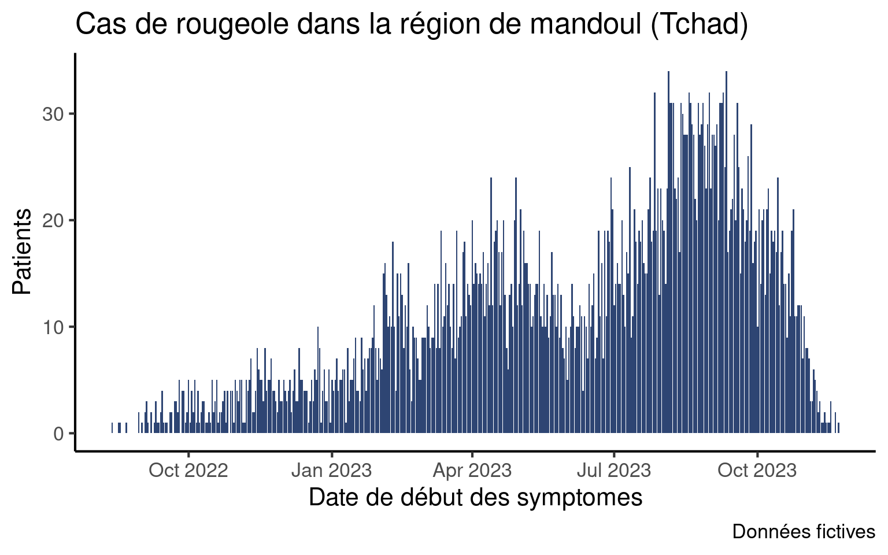
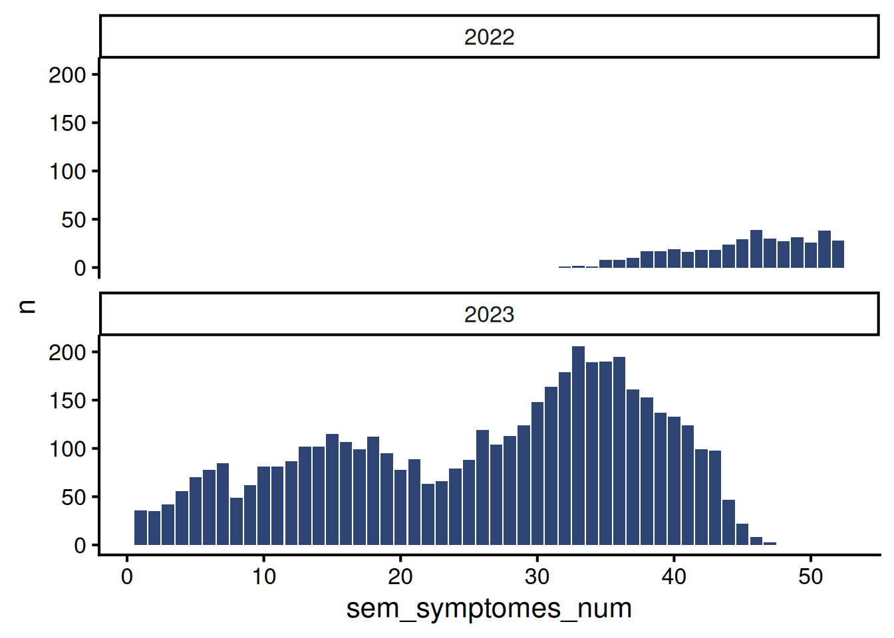
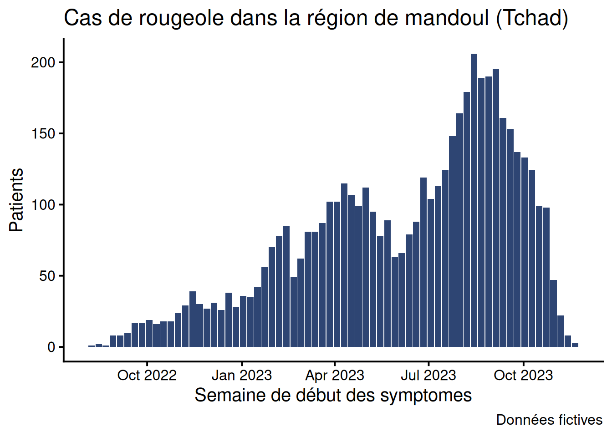
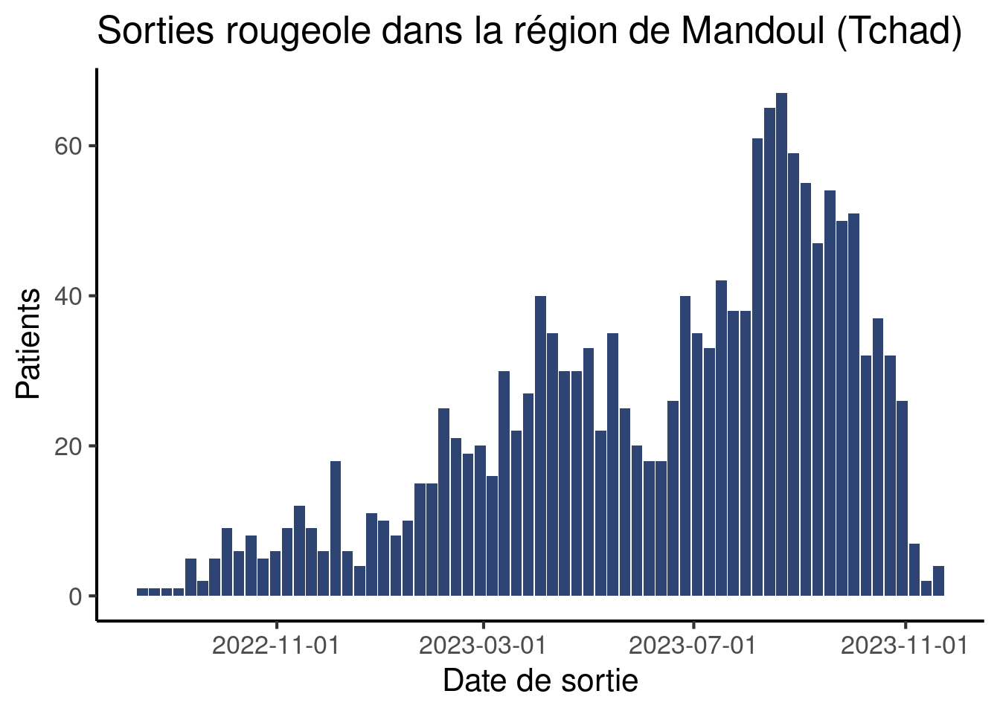
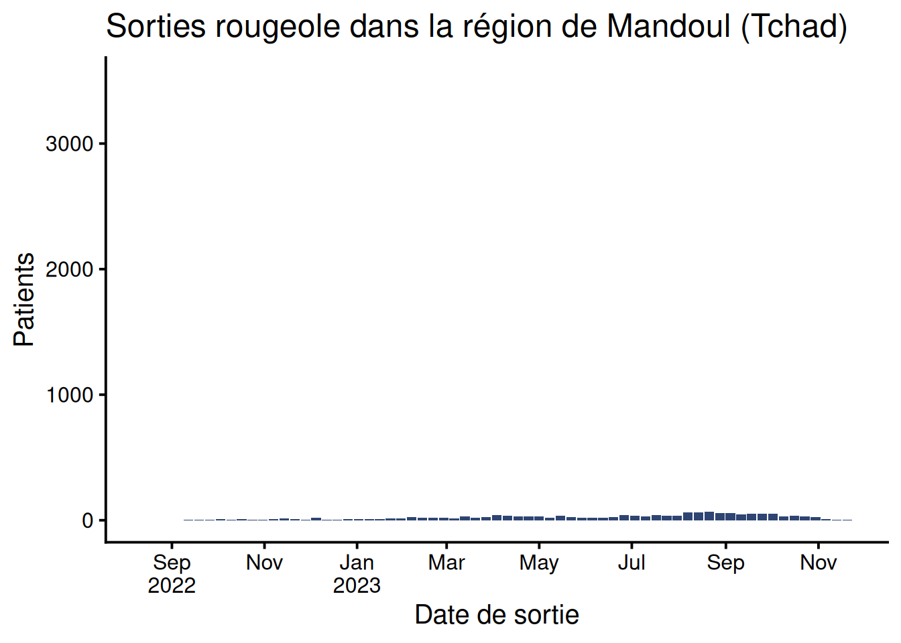
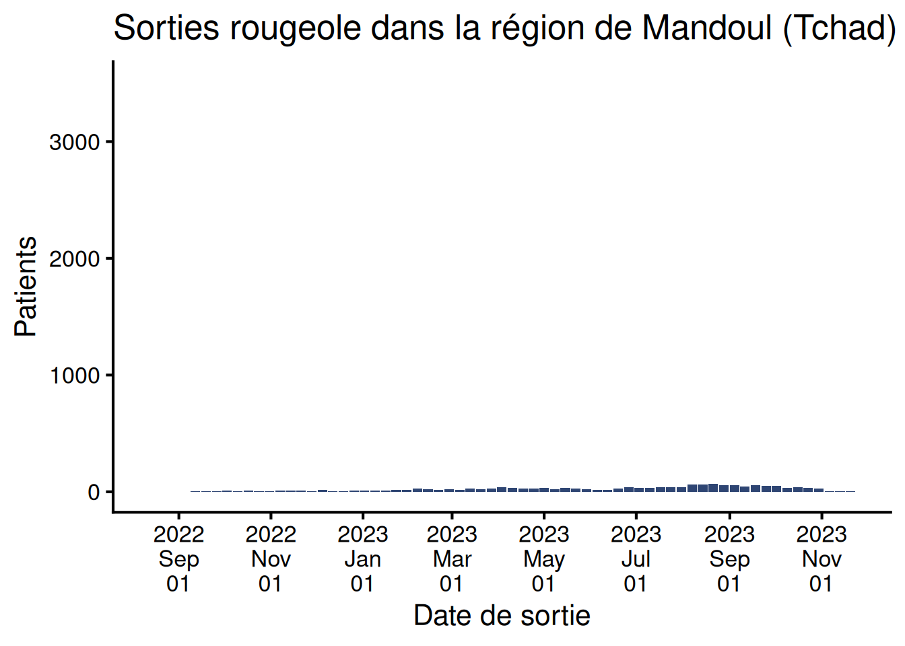
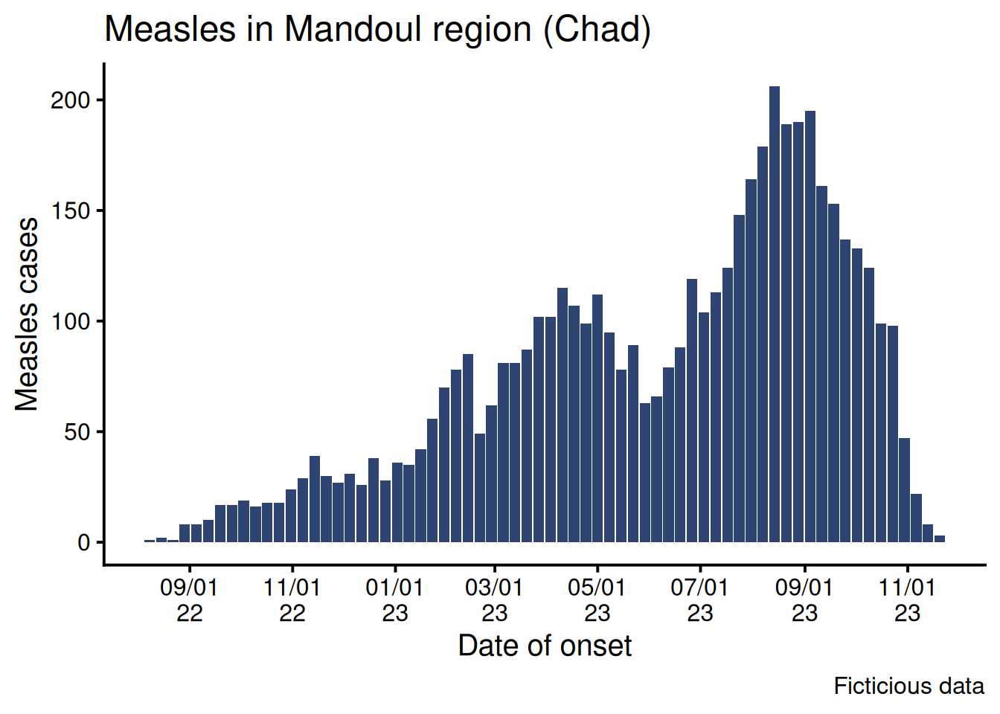

Courbes épidémiques hebdomadaires
Satellite
Visualization
Apprenez à tracer des courbes épidémiques hebdomadaires et à améliorer les étiquettes des axes
Objectifs
Dans la session principale sur les grapiques, vous avez appris à tracer une courbe épidémique du nombre de cas journaliers :
Ici les données sont agrégées par jour, ce qui raisonnable si l’épidémie est de courte durée ou si vous souhaitez zoomer sur une période spécifique. Il nous arrivera néanmoins de souvent vouloir tracer des courbes hebdomadaires.
Dans cette tutoriel, nous apprendrons à agréger les données par semaine, à tracer le graphique et à améliorer les étiquettes de l’axe des abscisses.
Prérequis : la session sur les courbes épidémiques.
Mise en place
Nous utiliserons la même liste linéaire nettoyée que précédemment et qui peut être téléchargée ici :
Si ce n’est pas déjà fait, enregistrez le jeu de données dans data/clean puis créez un nouveau script appelé courbe_hebdo.R dans votre sous-dossier R (alternativement, vous pouvez rajouter une section au script sur les courbes épidémiques journalières).
Si vous créez un nouveau script, ajoutez un en-tête approprié et chargez les paquets suivants : {here}, {rio}, {tidyverse} et {scales}. Importez ensuite les données propres (moissala_linelist_clean_FR.rds) dans R et enregistrez-les dans un objet df_linelist.
Au cours du tutoriel, les exemples porteront sur les sorties et vous tracerez la courbe épidémique à partir de la date de début des symptômes.
Données hebdomadaires
Nous allons aborder deux façons d’agréger les données par semaine. Le concept de la première vous sera sans doute familier (semaines identifiées par leur numéros), mais nous nous concentrerons sur une méthode plus robuste (semaine identifiées par la date du premier jour de la semaine).
Numéros de semaine
La manière la plus intuitive de d’agréger par semaine est d’utiliser des numéros de semaines, car les données du MSP sont souvent dans ce format. Vous avez sans doute créé de nombreuses courbes épidémiques dans ce format vous-mêmes.
La fonction isoweek() du paquet {lubridate} accepte une date (ou un vecteur de dates) et renvoie le numéro de semaine ISO.
exemple_date <- as.Date('2025-02-24')
exemple_date[1] "2025-02-24"isoweek(exemple_date)[1] 9Nous pouvons utiliser cette fonction pour créer une colonne sem_sortie_num dans nos données :
df_linelist <- df_linelist |>
mutate(sem_sortie_num = isoweek(date_sortie))Le début des colonnes date_sortie et sem_sortie_num ressemble à ceci (sans les NA) :
df_linelist |>
tidyr::drop_na(date_sortie) |>
select(date_sortie, sem_sortie_num) |>
head()# A tibble: 6 × 2
date_sortie sem_sortie_num
<date> <dbl>
1 2022-08-18 33
2 2022-08-28 34
3 2022-09-03 35
4 2022-09-12 37
5 2022-09-10 36
6 2022-09-18 37A vous de jouer. Utilisez les fonctions mutate() et isoweek() pour créer une nouvelle colonne dans votre data frame appelée sem_symptomes_num qui contient la semaine ISO associée à chaque date de début des symptômes. L’en-tête des colonnes date_debut et sem_symptomes_num devrait ressembler à ceci :
# A tibble: 6 × 2
date_debut sem_symptomes_num
<date> <dbl>
1 2022-08-13 32
2 2022-08-18 33
3 2022-08-17 33
4 2022-08-22 34
5 2022-08-30 35
6 2022-08-30 35Nous pourrions maintenant utiliser count() sur cette colonne pour agréger les données par semaine, puis tracer le graphique avec {ggplot2} avec un code très similaire à la session principale.
Malheureusement il y a un problème. Avec le numéro de semaine il y a une première semaine en 2022… mais aussi en 2023, 2024 etc. Dans le cas d’une épidémie courte qui n’aurait lieu qu’en 2022, cela ne poserait pas problème. Cependant, notre data frame contient des données de la région entière, et les dates s’étendent de 2022 à 2023. Donc si nous comptions le nombre de patient par numéro de semaine, le tableau suivant serait erroné :
# FAUX
df_linelist |>
count(sem_symptomes_num) |>
head(10)# A tibble: 10 × 2
sem_symptomes_num n
<dbl> <int>
1 1 36
2 2 35
3 3 42
4 4 56
5 5 70
6 6 78
7 7 85
8 8 49
9 9 62
10 10 81Pour résoudre le problème nous pouvons stratifier par année :
df_linelist |>
mutate(annee_symptomes = isoyear(date_debut)) |>
count(annee_symptomes, sem_symptomes_num) |>
head(10)# A tibble: 10 × 3
annee_symptomes sem_symptomes_num n
<dbl> <dbl> <int>
1 2022 32 1
2 2022 33 2
3 2022 34 1
4 2022 35 8
5 2022 36 8
6 2022 37 10
7 2022 38 17
8 2022 39 17
9 2022 40 19
10 2022 41 16Ces chiffres sont désormais corrects. Vous pourriez les représenter avec plusieurs mini graphes par année sur une même figure, ou simplement filtrer une année donnée et tracer la courbe avec les numéros de semaines sur l’axe des x. Dans le premier cas, cela donnerait ceci :
df_linelist |>
mutate(annee_symptomes = isoyear(date_debut)) |>
count(annee_symptomes, sem_symptomes_num) |>
ggplot(aes(x = sem_symptomes_num,
y = n)) +
geom_col(fill = "#2E4573") +
theme_classic(base_size = 16) +
facet_wrap(vars(annee_symptomes), # Magie pour faire le graphe par année !
ncol = 1)
Si vous n’avez pas lu le satellite sur facet_wrap(), ce n’est pas grave, voyez ce graphe comme une page de publicité pour la capacité de ggplot à faire des graphes multiples rapidement. Les explications sortent du cadre de ce tutoriel et nous allons vous montrer une autre façon d’agréger les données par semaine, qui est robuste aux données pluriannuelles.
Premier jour de la semaine
Une autre manière d’agréger par semaine est d’utiliser la fonction floor_date() (également du package {lubridate}), qui renvoie la première date d’une période donnée. Vous pouvez la considérer comme une sorte d’arrondi à la plus petite valeur, mais pour les dates.
La fonction a un argument unit pour choisir l’échelle de la période (semaine, mois…) et un argument week_start pour définir le premier jour de la semaine (les lundis sont 1).
df_linelist <- df_linelist |>
mutate(
sem_sortie_lundi = floor_date(date_sortie,
unit = "week",
week_start = 1)
)Regardons les différentes colonnes de plus près pour bien comprendre :
df_linelist |>
select(date_sortie, sem_sortie_num, sem_sortie_lundi) |>
arrange(date_sortie) |> # Trie par date
head(n = 10)# A tibble: 10 × 3
date_sortie sem_sortie_num sem_sortie_lundi
<date> <dbl> <date>
1 2022-08-18 33 2022-08-15
2 2022-08-28 34 2022-08-22
3 2022-09-03 35 2022-08-29
4 2022-09-10 36 2022-09-05
5 2022-09-12 37 2022-09-12
6 2022-09-12 37 2022-09-12
7 2022-09-16 37 2022-09-12
8 2022-09-17 37 2022-09-12
9 2022-09-18 37 2022-09-12
10 2022-09-19 38 2022-09-19 Pour aider à comprendre on peut calculer le jour de la semaine associé à chaque date en utilisant la fonction wday() (qui appartient aussi à {lubridate}, y a comme un thème 😉) [wday est une abréviation pour week day] :
df_linelist |>
# Calcule le premier jour de la semaine
mutate(
jour_sortie = wday(date_sortie,
label = TRUE,
abbr = FALSE),
cest_bien_un_lundi = wday(sem_sortie_lundi,
label = TRUE,
abbr = FALSE)) |>
arrange(date_sortie) |> # Trie par date
select(date_sortie,
jour_sortie,
sem_sortie_num,
sem_sortie_lundi,
cest_bien_un_lundi) |>
head(n = 10)# A tibble: 10 × 5
date_sortie jour_sortie sem_sortie_num sem_sortie_lundi cest_bien_un_lundi
<date> <ord> <dbl> <date> <ord>
1 2022-08-18 Thursday 33 2022-08-15 Monday
2 2022-08-28 Sunday 34 2022-08-22 Monday
3 2022-09-03 Saturday 35 2022-08-29 Monday
4 2022-09-10 Saturday 36 2022-09-05 Monday
5 2022-09-12 Monday 37 2022-09-12 Monday
6 2022-09-12 Monday 37 2022-09-12 Monday
7 2022-09-16 Friday 37 2022-09-12 Monday
8 2022-09-17 Saturday 37 2022-09-12 Monday
9 2022-09-18 Sunday 37 2022-09-12 Monday
10 2022-09-19 Monday 38 2022-09-19 Monday Ceci illustre comment sem_sortie_num et sem_sortie_lundi sont deux façons de représenter une semaine donnée. Mais si les numéros de semaine ne sont pas uniques, les dates, elles, le sont !
Ajoutez une nouvelle instruction à votre mutate() pour créer la variable sem_symptomes_lundi qui contient le premier jour de la semaine pour la date d’apparition des symptômes. Le premier jour de la semaine est un lundi au Tchad.
Astuce
Lisez la page d’aide de floor_date() pour connaître la liste des unités possibles.
Agréger
Maintenant que nous avons une variables qui identifie la semaine, nous pouvons enfin agréger nos données !
Comptez le nombre de patients par semaine de début des symptômes, en utilisant le début de la semaine pour identifier les semaines (sem_symptomes_lundi).
Voici les dix premières lignes de ce à quoi il devrait ressembler :
# A tibble: 10 × 2
sem_symptomes_lundi n
<date> <int>
1 2022-08-08 1
2 2022-08-15 2
3 2022-08-22 1
4 2022-08-29 8
5 2022-09-05 8
6 2022-09-12 10
7 2022-09-19 17
8 2022-09-26 17
9 2022-10-03 19
10 2022-10-10 16Tracer le graphique
Parfait. Nous pouvons maintenant passer nos données agrégées à la commande pour créer le graphique, en faisant quelques ajustements pour que le code précédent fonctionne.
Créez un ggplot avec le même aspect que la courbé épidémique de la session principale, mais avec le premier jour de la semaine sur l’axe des abscisses. N’oubliez pas de mettre à jour les noms des axes !
Il devrait ressembler à ceci :

Notez que même si les étiquettes sur l’axe des abscisses sont des dates, une barre représente les données d’une semaine (sept jours à compter du lundi).
Améliorer l’axe
Il est maintenant temps d’améliorer cet axe des abscisses.
{ggplot2} crée automatiquement des étiquettes pour l’axe des x, en essayant de s’adapter à l’étendue des données. Ces valeurs par défaut ne nous conviennent pas toujours, et nous voulons pouvoir manuellement changer les étiquettes (plus fréquentes ou plus espacées, améliorer le format etc.).
Pour modifier l’apparence de l’axe, nous allons utiliser une fonction de la famille scale de {ggplot2} : scale_x_date() [scale ici est l’échelle].
Modifier la fréquence des tirets
Dans {ggplot2}, les breaks [cassures] contrôlent la fréquence des tirets sur l’axe.
La fonction scale_x_date() a un argument date_breaks qui accepte l’intervalle entre deux étiquettes dans une chaîne de caractères aux formats suivants : "1 week", "2 weeks", "4 months", "2 years", etc.
df_linelist |>
count(sem_sortie_lundi) |>
ggplot(aes(x = sem_sortie_lundi,
y = n)) +
geom_col(fill = "#2E4573") +
labs(x = "Date de sortie",
y = "Patients",
title = "Sorties rougeole dans la région de Mandoul (Tchad)") +
scale_x_date(date_breaks = "4 months") + # Définit l'intervalle entre étiquettes
theme_classic(base_size = 16)Warning: Removed 1 rows containing missing values (`position_stack()`).
Modifiez votre code pour que la fréquence des tirets les rendent lisibles sur votre moniteur.
Améliorer les étiquettes
Maintenant que nous avons géré l’intervalle entre les tirets, nous pouvons modifier les étiquettes elles-mêmes (la façon dont les dates sont affichées sur l’axe, labels en anglais). Par défaut, elles sont sous la forme année-mois-jour. Nous allons voir deux manières de changer ça
La fonction scale_x_date() a un argument label qui accepte plusieurs types d’entrées, telles qu’un vecteur contenant les dates ou une fonction qui génère des labels. Le paquet {scales} fournit une telle fonction, label_date_short(), qui tente de créer des étiquettes de dates efficaces et courtes.
df_linelist |>
count(sem_sortie_lundi) |>
ggplot(aes(x = sem_sortie_lundi,
y = n)) +
geom_col(fill = "#2E4573") +
labs(x = "Date de sortie",
y = "Patients",
title = "Sorties rougeole dans la région de Mandoul (Tchad)") +
scale_x_date(date_breaks = "2 months",
labels = scales::label_date_short()) + # Etiquettes courtes
theme_classic(base_size = 15)Warning: Removed 1 rows containing missing values (`position_stack()`).
Modifiez votre code et usez label_date_short() pour créer des étiquettes courtes.
L’automatisation c’est sympa, mais si vous préférez avoir le contrôle total, R dispose d’une syntaxe pour décrire les formats de date et d’heure. Il existe une longue page d’aide (accessibles avec la commande help(strptime)) avec tous les éléments de syntaxe, mais voici un résumé des éléments les plus utiles pour décrire le format d’une date :
Numéro du jour :
-
%d: de 01 à 31 -
%e: de 1 à 31
Mois :
-
%b: nom du mois, forme abréviée (la langue dépend de la locale de votre ordinateur) -
%B: nom du mois, complet (la langue dépend de la locale de votre ordinateur) -
%m: Numéro du mois
Année :
-
%y: année à deux chiffres (sans le siècle) -
%Y: année à quatre chiffres
Séparateurs spéciaux :
-
%n: nouvelle ligne -
%t: tab
Vous pouvez assembler ces éléments dans une chaîne de caractères, que vous passez à différentes fonctions qui acceptent un format comme argument.
Nous allons d’abord utiliser la fonction format() pour voir rapidement l’affichage qu’elle crée à partir d’une syntaxe strptime, puis nous illustrerons l’usage dans un graphe.
# Crée un vecteur de dates pour explorer des formats différents
quelques_dates <- as.Date(c("2024-10-06", "2024-12-15", "2025-01-20"))
# Exemples de syntaxes possibles
format(quelques_dates, "%Y-%b-%d")[1] "2024-Oct-06" "2024-Dec-15" "2025-Jan-20"format(quelques_dates, "%Y-%b")[1] "2024-Oct" "2024-Dec" "2025-Jan"format(quelques_dates, "%Y %B %d")[1] "2024 October 06" "2024 December 15" "2025 January 20" format(quelques_dates, "%y/%m/%d")[1] "24/10/06" "24/12/15" "25/01/20"format(quelques_dates, "%d/%m/%Y")[1] "06/10/2024" "15/12/2024" "20/01/2025"Revenons à notre graphe. La fonction scale_x_date() a un argument date_labels qui accepte une chaîne de caractère dans le format strptime pour formater les étiquettes de dates.
df_linelist |>
count(sem_sortie_lundi) |>
ggplot(aes(x = sem_sortie_lundi,
y = n)) +
geom_col(fill = "#2E4573") +
labs(x = "Date de sortie",
y = "Patients",
title = "Sorties rougeole dans la région de Mandoul (Tchad)") +
scale_x_date(
date_breaks = "2 months", # Définit l'intervalle entre étiquettes
date_labels = "%Y%n%b%n%d") + # Definit le format des étiquettes
theme_classic(base_size = 16)Warning: Removed 1 rows containing missing values (`position_stack()`).
Modifiez votre graphe pour que les étiquettes soient comme ceci :

C’est fini !
Bravo ! Les dates dans R sont un sujet compliqué, et leur format est souvent un peu effrayant. Nous espérons que cette petite introduction vous aura donné quelques astuces pour que vos courbes épidémiques soient lisibles.
Aller plus loin
Exercices supplémentaires
- Utilisez ce format dans cotre graphe : “2024-oct.”, “2024-dec.”
- Créez une courbe épidémique avec la date de consultation, avec le premier jour de la semaine sur l’axe des x (vous êtes libres du format de la date).
- Créez une courbe épidémique pour l’année 2023 qui montre le nombre d’admissions hospitalières hebdomadaires, avec le numéro ISO de la semaine en abscisse.
Défi
- Tracez une courbe épidémique de la date d’apparition des symptômes par mois. Utilisez un format d’étiquette qui vous semble approprié et lisible.
Ressources
- Le chapitre (en anglais) “Elegant graphics for data analyses’ book on date scales
- La page d’aide de lubridate